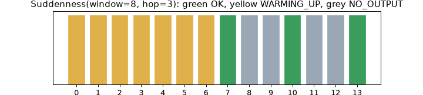
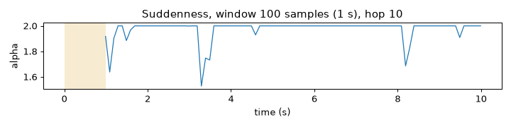

Note
Go to the end to download the full example code.
The contract every feature follows#
Every PyEyesWeb feature takes its input and returns its output in the same way. This tutorial goes through those rules one
at a time, with Kinematics for a point, Suddenness for a window of samples and KineticEnergy for a skeleton.
- Goals:
use
process(live) andrun(offline) and know whatresetdoes; read aResultand itsSchema; interpretStatusand the warm-up; give time and units correctly; change a parameter while a feature runs; build a feature from a preset; list the catalog.- Prerequisites:
- Data:
trial 7 of the example session (clapping hands), seconds 5 to 15.
- Time:
about 25 minutes.
Data used in this tutorial#
We use the right hand of trial 7, in metres (the recording is in millimetres: to_units("m") converts it; the section
on units shows the alternative). Time is in seconds.
import matplotlib.pyplot as plt
import numpy as np
from helpers import plot_recorder
from pyeyesweb.datasets import load_qualisys_trial
trial = load_qualisys_trial(7, start=5, stop=15)
metres = trial.to_units("m")
hand = metres.joint("Right_Hand")
time = metres.timestamps
print(hand.shape, "samples of (x, y, z) in", metres.units, "| duration", metres.duration, "s")
(1000, 3) samples of (x, y, z) in m | duration 10.0 s
Live and offline: process and run#
A feature has two ways to be used. process(sample, timestamp=...) takes one sample and returns a
Result; the feature remembers what it needs between calls, as in a live loop.
run(samples, timestamps=...) takes a whole recording and returns a Recorder. run is
defined as reset() followed by a loop of process calls, so the numbers are the same.
from pyeyesweb.data_models import Recorder
from pyeyesweb.low_level import Kinematics
kinematics = Kinematics(sampling_rate=100) # positions in metres (the default unit)
streamed = Recorder(kinematics)
kinematics.reset()
for sample, stamp in zip(hand, time):
streamed.append(kinematics.process(sample, timestamp=stamp))
offline = kinematics.run(hand, timestamps=time)
print("process loop equals run:", np.array_equal(streamed.to_numpy(), offline.to_numpy()))
process loop equals run: True
reset() forgets everything the feature has seen. run resets first; run(..., reset=False) continues from the
current state, so a recording can be processed in chunks that add up to the whole.
first = kinematics.run(hand[:300], timestamps=time[:300])
second = kinematics.run(hand[300:], timestamps=time[300:], reset=False)
chunks = np.concatenate([first.to_numpy(), second.to_numpy()])
print("two chunks equal the whole:", np.array_equal(chunks, offline.to_numpy()))
cold = kinematics.run(hand[300:], timestamps=time[300:]) # reset=True: the second chunk starts cold
print("restarted second chunk, first row:", cold.to_numpy()[0], "instead of", second.to_numpy()[0])
two chunks equal the whole: True
restarted second chunk, first row: [0.] instead of [0.7654]
Takeaway. process is for streams and run for recordings; they give the same numbers; reset starts over.
The result and its schema#
What a feature returns is declared before any data arrives: feature.outputs is a Schema, a list of Output
declarations with name, shape and unit. A Result holds one value per output, and the
status of the call (see Results, statuses and recorders). With output_dims="components" the velocity has one value per
coordinate; its shape (None,) means that the length (2 or 3) is read from the first sample.
components = Kinematics(sampling_rate=100, output_dims="components")
print(components.outputs)
output = components.outputs["velocity"]
print("output:", output.name, "| shape:", output.shape, "| unit:", output.unit)
components.reset()
for index in range(5):
result = components.process(hand[index], timestamp=time[index])
print(result)
Schema(Output('velocity', shape=(None,), unit='m/s'))
output: velocity | shape: (None,) | unit: m/s
KinematicsResult(status=OK, velocity=[-0.0391, 0.0078, -0.0055])
Every output is an attribute (result.velocity) and a key (result["velocity"]); valid says, for each output,
whether it holds a value; to_dict() and to_array() give plain Python and NumPy objects.
print("velocity:", result.velocity, "=", result["velocity"])
print("valid:", result.valid)
print("status:", result.status, "| ok:", result.ok, "| as integer:", int(result.status))
print("to_dict:", result.to_dict())
print("to_array:", result.to_array())
velocity: [-0.0391 0.0078 -0.0055] = [-0.0391 0.0078 -0.0055]
valid: {'velocity': True}
status: OK | ok: True | as integer: 0
to_dict: {'velocity': array([-0.0391, 0.0078, -0.0055])}
to_array: [-0.0391 0.0078 -0.0055]
A result never changes after it is made: its arrays are read-only. A missing value is never None: it is NaN
(0 for an integer, False for a boolean), so a column of results is always a plain array.
try:
result.velocity[0] = 1.0
except ValueError as error:
print("ValueError:", error)
ValueError: assignment destination is read-only
Takeaway. Outputs are declared by a Schema before data arrives; a Result holds one value per output and never
contains None.
Status and warm-up#
A feature that works on a window of samples cannot answer before the window is full. The status of a result tells why
a value is absent. Suddenness looks at window samples of a trajectory and reports a new
result every hop samples. With window=8 and hop=3:
WARMING_UP: fewer than 8 samples so far; thereasoncounts them;OK: a window was computed;NO_OUTPUT: between two windows (hop);INVALID_INPUT: the sample was not data (next section).
from pyeyesweb.mid_level import Suddenness
suddenness = Suddenness(window=8, hop=3)
rows = []
for index in range(14):
result = suddenness.process(hand[index], timestamp=time[index])
rows.append(result)
print(f"sample {index:2d}: {result.status.name:<10} {result.reason}")
sample 0: WARMING_UP 1 of 8 samples
sample 1: WARMING_UP 2 of 8 samples
sample 2: WARMING_UP 3 of 8 samples
sample 3: WARMING_UP 4 of 8 samples
sample 4: WARMING_UP 5 of 8 samples
sample 5: WARMING_UP 6 of 8 samples
sample 6: WARMING_UP 7 of 8 samples
sample 7: OK
sample 8: NO_OUTPUT between windows
sample 9: NO_OUTPUT between windows
sample 10: OK
sample 11: NO_OUTPUT between windows
sample 12: NO_OUTPUT between windows
sample 13: OK
sphinx_gallery_thumbnail_number = 1
colors = {"OK": "#3a9d5d", "WARMING_UP": "#e0b04a", "NO_OUTPUT": "#9aa8b6"}
fig, ax = plt.subplots(figsize=(8, 1.8))
for index, result in enumerate(rows):
ax.bar(index, 1, color=colors[result.status.name], edgecolor="white")
ax.set_yticks([])
ax.set_xticks(range(14))
ax.set_xlabel("sample number")
ax.set_title("Suddenness(window=8, hop=3): green OK, yellow WARMING_UP, grey NO_OUTPUT")
ax.grid(False)

feature.latest keeps the last result that was OK. It is None before the first one and after reset().
print("latest:", suddenness.latest)
suddenness.reset()
print("latest after reset:", suddenness.latest)
latest: SuddennessResult(status=OK, is_sudden=True, alpha=2, beta=1, gamma=1.34499)
latest after reset: None
On a whole recording the same statuses are columns of the recorder. plot_recorder draws the rows that are OK and shades the warm-up
(yellow: warming up; red: invalid input), here for a window of one second that moves every 0.1 s.
slow_window = Suddenness(window=100, hop=10).run(hand, timestamps=time)
print(slow_window)
fig = plot_recorder(slow_window, names=["alpha"], t=time, title="Suddenness, window 100 samples (1 s), hop 10")

Recorder(Suddenness, rows=1000, columns=['is_sudden', 'alpha', 'beta', 'gamma'], status={'OK': 91, 'WARMING_UP': 99, 'NO_OUTPUT': 810})
Takeaway. The status says why a value is missing; the first OK comes when the window is full, then every hop
samples.
Data that is not data#
A sample with NaN or infinity, an empty sample, or a time that goes backwards does not raise an error: the result has the
status INVALID_INPUT, every output empty, and the explanation in reason. The rejected sample is not remembered, so
the next good sample carries on. A sample of the wrong shape is a programming error and raises ValueError.
kinematics.reset()
kinematics.process(hand[0], timestamp=time[0])
broken = kinematics.process([np.nan, 0.0, 0.0], timestamp=time[1])
print(broken)
print("valid:", broken.valid, "| value:", broken.velocity)
print("next good sample:", kinematics.process(hand[1], timestamp=time[1]).status)
try:
kinematics.process([1.0, 2.0], timestamp=time[2])
except ValueError as error:
print("ValueError:", error)
KinematicsResult(status=INVALID_INPUT, reason='NaN or infinite values', velocity=nan)
valid: {'velocity': False} | value: nan
next good sample: OK
ValueError: Kinematics: input 'point' expects sample of shape (3,), got shape (2,)
Takeaway. Bad data gives INVALID_INPUT and a reason; a wrong shape raises ValueError.
Time is in seconds#
Every quantity with time in it is in seconds. A feature that needs the step between two samples takes it from the
timestamp of the calls; if there is none, from 1 / sampling_rate; if there is neither, it counts one second per
sample and says so in reason (see Time, units and parameters). Stamping the same positions at twice the
time doubles the time between samples and halves the velocity.
real = Kinematics(sampling_rate=100).run(hand, timestamps=time)
slow = Kinematics(sampling_rate=100).run(hand, timestamps=2 * time)
ratio = np.median(np.abs(real.velocity[20:]) / np.abs(slow.velocity[20:]))
print(f"velocity with real timestamps / velocity with doubled timestamps = {ratio:.2f}")
untimed = Kinematics().process(hand[0])
print("no time given:", repr(untimed.reason))
velocity with real timestamps / velocity with doubled timestamps = 2.00
no time given: 'no time given: per-sample derivatives'
Takeaway. Give timestamp or sampling_rate; time is in seconds, never in frames.
Units#
Lengths are in metres by default. A feature whose result depends on the length unit has a units parameter
("m" or "mm"); the parameters are rescaled and your data and its outputs are not. The unit of every output is in
its Output. The same hand in millimetres, with units="mm", gives the same velocity in mm/s.
in_mm = Kinematics(sampling_rate=100, units="mm")
velocity_mm = in_mm.run(trial.joint("Right_Hand"), timestamps=time)
velocity_m = Kinematics(sampling_rate=100).run(hand, timestamps=time)
print("units of the outputs:", in_mm.outputs["velocity"].unit, "and", Kinematics().outputs["velocity"].unit)
print("ratio of the two velocities:", round(float(np.median(velocity_mm.velocity[20:] / velocity_m.velocity[20:])), 1))
units of the outputs: mm/s and m/s
ratio of the two velocities: 1000.0
Takeaway. Say which unit your positions are in, by converting them or by setting units; the outputs follow the input.
Choices are strings#
A parameter that offers a choice takes a lower-case string, in any case; an on/off parameter takes a real bool. A wrong
value raises ValueError and lists the valid ones, also when the value is changed later.
print(Kinematics(output_dims="Components").output_dims)
for make in (lambda: Kinematics(output_dims="radial"), lambda: setattr(components, "output_type", "snap")):
try:
make()
except ValueError as error:
print("ValueError:", error)
components
ValueError: output_dims: invalid value 'radial'; choose one of 'components', 'tangential'
ValueError: output_type: invalid value 'snap'; choose one of 'smoothed', 'velocity', 'acceleration', 'jerk', 'curvature', 'direction'
Takeaway. Choices are strings, and a wrong one tells you the right ones.
Live and structural parameters#
A parameter can be changed while a feature runs, by assignment. A live parameter takes effect at once and the state is
kept. A structural parameter changes what the feature is computing, so the state restarts, and the next reason says
so. KineticEnergy has both: sampling_rate is live, input_mode is structural.
from pyeyesweb.low_level import KineticEnergy
energy = KineticEnergy(skeleton=metres.skeleton, sampling_rate=100)
for index in range(3):
energy.process(metres.positions[index])
energy.sampling_rate = 50 # live: the previous frame is still there
print("after a live change:", repr(energy.process(metres.positions[3]).reason))
energy.input_mode = "velocity" # structural: velocities have no previous frame
print("after a structural change:", repr(energy.process(np.zeros((20, 3))).reason))
print("the note appears once:", repr(energy.process(np.zeros((20, 3))).reason))
after a live change: ''
after a structural change: 'parameters changed: state reset'
the note appears once: ''
For window and hop the newest samples are kept: suddenness.window = 12 keeps the latest 12 samples and the
feature goes on. Which parameter of which feature is live is listed in Time, units and parameters.
Takeaway. Assign a parameter to change it while running; a structural change restarts the state and says so.
Other ways to build a feature#
Three classes have named constructors for the form of the input: KineticEnergy.from_position and from_velocity,
Kinematics.from_point and from_series, LogDimensionlessJerk.from_velocity and from_acceleration. They are
the same feature set up for one form of data. For example, the energy of velocities that you computed yourself:
velocity = np.gradient(metres.positions, 1 / metres.sampling_rate, axis=0) # (frames, joints, 3) in m/s
from_velocity = KineticEnergy.from_velocity(skeleton=metres.skeleton)
by_hand = from_velocity.run(velocity)
print(by_hand)
print("peak energy:", round(float(by_hand.kinetic_energy.max()), 2), "J/kg")
Recorder(KineticEnergy, rows=1000, columns=['kinetic_energy'], status={'OK': 1000})
peak energy: 6.84 J/kg
Takeaway. The from_* constructors fix the form of the input; the contract is the same.
Skeletons and presets#
A feature that must know the joints takes a skeleton: a preset by name or a
Skeleton you build. pyeyesweb.skeletons has the presets of the lab devices;
the 20 joints of the example data are in trial.skeleton. The feature takes its joint names, the left-right pairs
and the weights from it.
from pyeyesweb.skeletons import SKELETONS
for name, skeleton in SKELETONS.items():
print(f"{name:<15} {len(skeleton.joints):>2} joints, {len(skeleton.pairs):>2} pairs, reference joint: {skeleton.reference}")
print("trial.skeleton:", metres.skeleton.name, len(metres.skeleton.joints), "joints, missing:", metres.skeleton.missing())
kinect_v2 25 joints, 10 pairs, reference joint: SpineShoulder
qualisys_sport 41 joints, 18 pairs, reference joint: None
mediapipe 33 joints, 16 pairs, reference joint: None
openpose 25 joints, 11 pairs, reference joint: Neck
trial.skeleton: standard20 20 joints, missing: ()
A preset may leave fields empty (Skeleton.missing() lists them). A few humanoid features take a
joint_map instead, which maps the joint names of a model to the labels of your data; they come with the tutorial on
physical signals (Physical signals: points and models).
The catalog#
catalog() lists every feature with its layer, timescale and the EyesWeb block it comes from. The layers
are described in Layers and the catalog.
import pyeyesweb
entries = pyeyesweb.catalog()
print(len(entries), "features")
for layer in pyeyesweb.Layer:
names = [e.name for e in entries if e.layer is layer]
print(f"{layer.title:<26} {len(names):>2} e.g. {', '.join(names[:3])}")
60 features
Layer 1: physical signals 11 e.g. HumanoidSimulator, HumanoidOrientations, GenericModelOrientations
Layer 2: low-level features 22 e.g. Kinematics, KineticEnergy, BoundingBoxFilledArea
Layer 3: mid-level features 7 e.g. GestureSegmenter, MotionDuration, Suddenness
Layer 4: qualities communicated 1 e.g. EnsembleDominance
Analysis primitives 19 e.g. SampleEntropy, CoarseGraining, Rarity
Takeaway. Every feature is in the catalog with its layer, and the same contract applies to all of them.
Try it#
Kinematicscan return the velocity, the acceleration and the jerk of the same hand in one call: giveoutput_typea list. How many outputs does the schema have? Run it and print the status counts of the recorder.Feed
Suddenness(window=8, hop=3)the first 20 samples of the hand withprocessand list the sample numbers where the status isOK. Then changehopto 1 and do it again. What changed?Break the contract on purpose: give
processa timestamp that does not increase. What are the status and the reason, and does the next valid sample work?
Solutions#
Exercise 1. output_type takes a name or a list of names; the schema has one output per name.
multi = Kinematics(sampling_rate=100, output_type=["velocity", "acceleration", "jerk"])
recorder = multi.run(hand, timestamps=time)
print(multi.outputs.names, "| rows:", len(recorder))
print({name: int((recorder.status == code).sum()) for name, code in (("OK", 0), ("WARMING_UP", 1), ("INVALID_INPUT", 3))})
('velocity', 'acceleration', 'jerk') | rows: 1000
{'OK': 1000, 'WARMING_UP': 0, 'INVALID_INPUT': 0}
Exercise 2. The first window ends at sample 7; hop sets how often a result follows.
hop=3: OK at samples [7, 10, 13, 16, 19]
hop=1: OK at samples [7, 8, 9, 10, 11, 12, 13, 14, 15, 16, 17, 18, 19]
Exercise 3. A repeated time is data that is not valid: the call is rejected and not remembered.
check = Kinematics(sampling_rate=100)
check.process(hand[0], timestamp=1.0)
repeated = check.process(hand[1], timestamp=1.0)
print(repeated.status, "-", repeated.reason)
print("next valid sample:", check.process(hand[1], timestamp=1.01).status)
INVALID_INPUT - non-increasing timestamp
next valid sample: OK
Next steps#
Results, statuses and recorders, Inputs and Time, units and parameters: these rules in reference form.
Data models:
Feature,Result,Schema,StatusandRecorder.Catalog: the catalog and its types.
The tutorials by layer start with Physical signals: points and models (physical signals: points).